In this Lab, you will be required to refactor our CoffeeMate Case Study, called CoffeeMate.2.0. We will build on the previous lab and add in some new features and UI Design. In this version we will add in a few more activities and some extra layouts. On completion of this lab you'll be able to
use 'Bundles' to pass data between activities
use Custom Layouts
use Custom Adapters
use Fragments
As with the previous lab, you can download some starter code for this lab here - CoffeeMate.2.0.Starter. It contains all the resources you'll need to complete this lab along with some of the code.
To open this in Android Studio, first extract the archive somewhere on our hard disk and select 'File->Open' etc. like you did in Lab 02.
Once you open/import the CoffeeMate 2.0 Starter Project it should looks as follows:
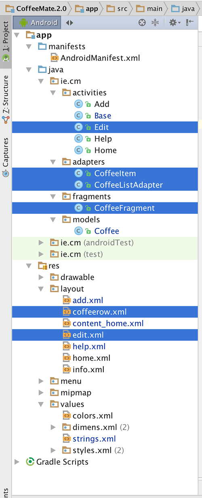
Take some time to familiarise yourself with the new (highlighted) classes in your project and explore the resources that you will be referring to throughout the lab, especially the layouts in both 'Graphical Layout' view and 'XML' view. It's also probably a good idea to run the App at this stage too, so you can set up your AVD (if you haven't done so already) and confirm that the starter app is configured properly and running (so basically it's Version 1 with a few style changes).
In this lab, you are required to do the following:
Display the list of Coffees in a visually appealing list.
Allow Coffees in the list to be updated (edited) and/or deleted from the list.
The following steps will guide you through these requirements, so we'll start with displaying the Coffees in a nice list.
When we're finsihed this lab, we'll have something like this
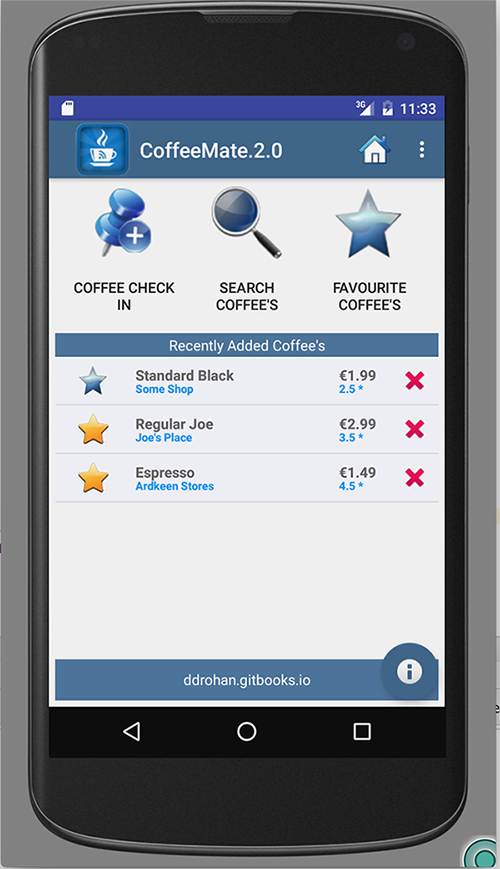 So, first of all, have a quick look again at the resource layout (home.xml). We're using a FrameLayout as the container for our List of Coffees, which ultimately holds a Fragment, but we'll talk more about that later.
Once you've had a look at the layout, open your Base.java Activity class and familiarize yourself with the new variables this class now has.
There's two new instance variables
protected Bundle activityInfo; // Used for persistence (of sorts)
protected CoffeeFragment coffeeFragment; // How we'll 'share' our List of Coffees between ActivitiesThe first thing to do is refactor the Home Screen onCreate() method to make use of a helper method, (setupCoffees()) so make sure your new onCreate() method looks something like this:
protected void onCreate(Bundle savedInstanceState) {
super.onCreate(savedInstanceState);
setContentView(R.layout.home);
Toolbar toolbar = (Toolbar) findViewById(R.id.toolbar);
setSupportActionBar(toolbar);
toolbar.setLogo(R.drawable.ic_launcher1);
recentList = (TextView) findViewById(R.id.recentlyAddedListEmpty);
FloatingActionButton fab = (FloatingActionButton) findViewById(R.id.fab);
fab.setOnClickListener(new View.OnClickListener() {
@Override
public void onClick(View view) {
Snackbar.make(view, "Information", Snackbar.LENGTH_LONG)
.setAction("More Info...", new View.OnClickListener() {
@Override
public void onClick(View view) {
openInfoDialog(Home.this);
}
}).show();
}
});
setupCoffees();
}Note that we have removed any Eventlistener settings - we now handle onClick() events in the layout (via the xml).
The setupCoffees() method adds a few Coffee objects to our static coffeeList, so maybe run the App again just to confirm you're not seeing a blank screen anymore, but your coffees.
Next we'll start with the task of displaying our Coffees in a custom ListView.
There are 3 major components (classes) involved in implementing this feature:
CoffeeItem
CoffeeListAdapter
CoffeeFragment
We'll take each class in turn and insert the necessary code to complete this feature of the App.
The main purpose of this class is to represent a single coffee row in our custom list, so the first thing we need to do is decide how the row should actually look - the associated layout (coffeerow.xml) is already supplied:
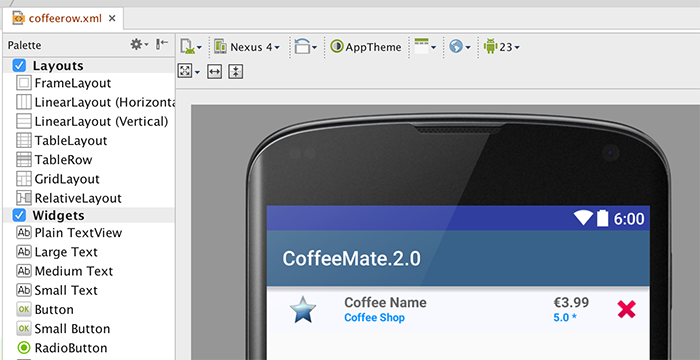
but familarise yourself with the widgets (the 'fields' or Views) as you will need to access them in your code.
Inside CoffeeItem.java you will need to finish the updateControls() method to ensure all the coffee data is displayed correctly. This will involve "binding" to each of the widgets (Views) on the layout and setting their value. You can see how the coffee name widget is set below:
private void updateControls(Coffee coffee) {
((TextView) view.findViewById(R.id.rowCoffeeName)).setText(coffee.name);
// Do the same for shop, rating, price & the favourite image here
// and set the favourite on/off depending on the coffees favourite value
}The main purpose of this class is to bind our coffeeList data to a particular view (a ListView in our case) and ultimately display it like so:
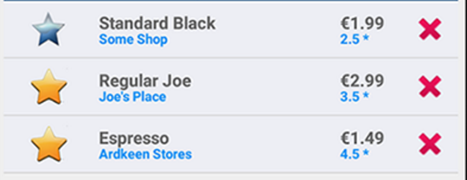
It's worth noting that this class is a custom adapter class, and it's the only way we get to display or coffee data in the "custom" format we want (ie our CoffeeItem rows) - if we were to use a standard Adapter, we would only be able to display our coffees in a very basic fashion.
To "customise" our adapter, we first say that it will manage Coffee Objects (already done) :
public class CoffeeListAdapter extends ArrayAdapter<Coffee>
{
...and then override a number of methods:
@Override
public View getView(int position, View convertView, ViewGroup parent)
{
return null;
}
@Override
public int getCount()
{
return 0;
}
@Override
public Coffee getItem(int position)
{
return null;
}
@Override
public long getItemId(int position)
{
return 0;
}
@Override
public int getPosition(Coffee c)
{
return 0;
}
}Remember, the getView() method is automatically called for every object that exists in the underlying data (ie our coffeeList) so you should be returning a CoffeeItem reference here - try and have a go at this without referring to the notes.
The remaining methods are all related to the coffeeList itself, so again, give it a go without the notes!
The main purpose of this class is to allow us to reuse a component (the Fragment) which contains our list of coffees:
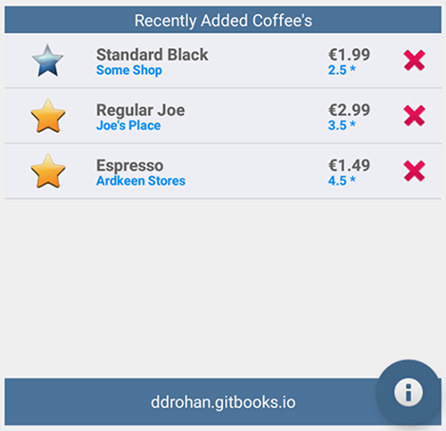
The only thing we need to do at this stage is create an instance of our custom adapter and associate it with our Fragment, so inside the onCreate() method of the fragment insert the following:
listAdapter = new CoffeeListAdapter(activity, this, Base.coffeeList);
setListAdapter (listAdapter);The last thing we need to do is attach this Fragment to the Home Screen, so inside our onResume() method in Home.java you need to insert the following:
coffeeFragment = CoffeeFragment.newInstance(); //get a new Fragment instance
getFragmentManager().beginTransaction().add(R.id.fragment_layout, coffeeFragment).commit(); // add it to the current activityYou'll get an error on R.id.fragment_layout so you need to replace the ListView element in content_home.xml with the following:
<FrameLayout
android:id="@+id/fragment_layout"
android:layout_width="wrap_content"
android:layout_height="wrap_content"
android:layout_above="@+id/footerLinearLayout"
android:layout_alignParentLeft="true"
android:layout_alignParentRight="true"
android:layout_alignParentTop="true" />Build your project and if you run your app again you should see your list displayed on the Home Screen like so (with a small bug to fix!) :
and you should be able to "Add a Coffee" so make sure to check this functionality. On a related note, you've probably noticed your list 'duplicates' the data, so it's worth removing the setupCoffees() method, now we know our 'Add' works.
However, if you select a row in the list, or select the 'delete' button, nothing happens - that's the next step.
Having a nice custom list isn't really much use unless the user can interact with the list by clicking on a row (or an element within the row). Over the next few steps we'll build in the ability to both edit a coffee's details, and if the user wishes, delete it from the list.
To give the user the option of deleting a coffee (by pressing the 'X' button) we first need to "listen" for such an event, so we should attach some kind of Listener to that button. If you have a closer look at our CoffeeItem constructor, you'll see that we already have that setup:
ImageView imgDelete = (ImageView) view.findViewById(R.id.imgDelete);
imgDelete.setTag(coffee);
imgDelete.setOnClickListener(deleteListener);Be clear about what is going on here as the setTag() method is important in the overall scheme of things.
The rest of the work we need to do is carried out in the CoffeeFragment class so firstly, look again at how we create our CoffeeListAdapter instance, listAdapter:
listAdapter = new CoffeeListAdapter(activity, this, Base.coffeeList);Notice that the OnClickListener parameter, is a reference to the class itself (this) so the CoffeeFragment class needs to implement this interface as follows:
You completed onClick() method should look something like this:
@Override
public void onClick(View view)
{
if (view.getTag() instanceof Coffee)
{
onCoffeeDelete ((Coffee) view.getTag());
}
}Here we use the Views 'Tag' to see if it's a coffee, and if it is, that's the one we delete. You can just copy & paste the following code for the onCoffeeDelete() method:
public void onCoffeeDelete(final Coffee coffee)
{
String stringName = coffee.name;
AlertDialog.Builder builder = new AlertDialog.Builder(activity);
builder.setMessage("Are you sure you want to Delete the \'Coffee\' " + stringName + "?");
builder.setCancelable(false);
builder.setPositiveButton("Yes", new DialogInterface.OnClickListener()
{
public void onClick(DialogInterface dialog, int id)
{
Base.coffeeList.remove(coffee); // remove from our list
listAdapter.coffeeList.remove(coffee); // update adapters data
listAdapter.notifyDataSetChanged(); // refresh adapter
}
}).setNegativeButton("No", new DialogInterface.OnClickListener()
{
public void onClick(DialogInterface dialog, int id)
{
dialog.cancel();
}
});
AlertDialog alert = builder.create();
alert.show();
}Pay particular attention to the following:
public void onClick(DialogInterface dialog, int id)
{
Base.coffeeList.remove(coffee); // remove from our list
listAdapter.coffeeList.remove(coffee); // update adapters data
listAdapter.notifyDataSetChanged(); // refresh adapter
}and understand what is happening here, as this is an important piece of the puzzle.
So now, when you run the app and select the delete button, you should get something like this:
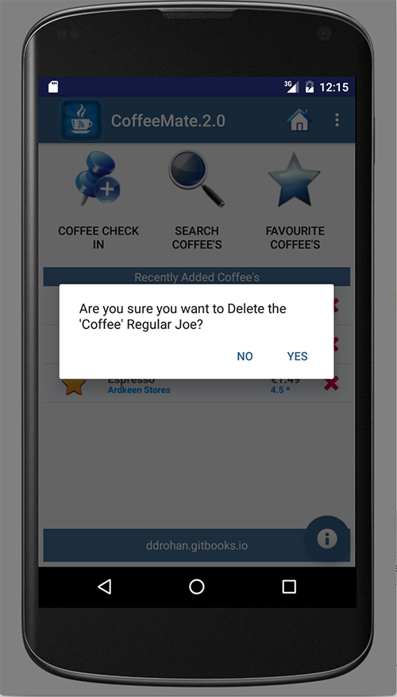
and if you choose 'Yes', then the coffee should be removed from the list.
Now, onto editing a coffee.....
The user now has the ability to delete (or remove) a coffee from the list of coffees displayed. But what if the user wants to update some of the coffees details? Maybe make it one of his or hers favourite coffees? That's what this step is about, so we'll be taking a similar approach as the previous step, but implementing a slightly different kind of Listener.
To give the user the option of Editing a coffee (by pressing the full row) we first need to "listen" for such an event, so we need to attach a Listener that 'listens' for individual row click events, and not just an element of the row.
If you remember from the previous step, our CoffeeFragment was responsible for handling 'delete' events, so naturally, this class will also manage any updates or edits the user wants to make.
Open your CoffeeFragment.java and override the onListItemClick() method - this will execute every time a user selects a single row (or listItem) in the list, so this is where you need to
find out which coffee was selected (and it's 'ID')
launch another activity so we can update the selected coffee
make sure the change to our coffee is reflected in our coffeeList
We need to use Bundles and Intents and specifically, the first two parts are partially achieved as follows:
Bundle activityInfo = new Bundle(); // Creates a new Bundle object
activityInfo.putInt("coffeeID", /* pass in the coffees id here */);
Intent goEdit = new Intent(getActivity(), Edit.class); // Creates a new Intent
/* Add the bundle to the intent here */
getActivity().startActivity(goEdit); // Launch the IntentHave a go at completing the above as best you can.
Once you have that done, the rest of the work we need to do is carried out in the Edit Activity class so firstly, have a look at the onCreate() method - there's some code already in there, but if you try and run the app, it'll crash.
Any ideas why??
Next thing to do is setup the correct view for the activity - this is done using the setContentView() method, so see can you implement that, without referring to the solution below.
Also you need to 'bind' to and setup event handling on favouriteImage in the xml to avoid a NullPointerException, as follows:
android:onClick="toggle"favouriteImage = (ImageView) findViewById(R.id.favouriteImageView);and you need to retrieve the 'coffeeID' from the Bundle, and get the coffee from our list using the getCoffeeObject() helper method - once again, try and have a go at this without referring to the solution code:
(and here it is!)
setContentView(R.layout.edit);
activityInfo = getIntent().getExtras();
aCoffee = getCoffeeObject(activityInfo.getInt("coffeeID"));
favouriteImage = (ImageView) findViewById(R.id.favouriteImageView);Now if you run your app, and select a row, you should launch the 'Edit' Screen.
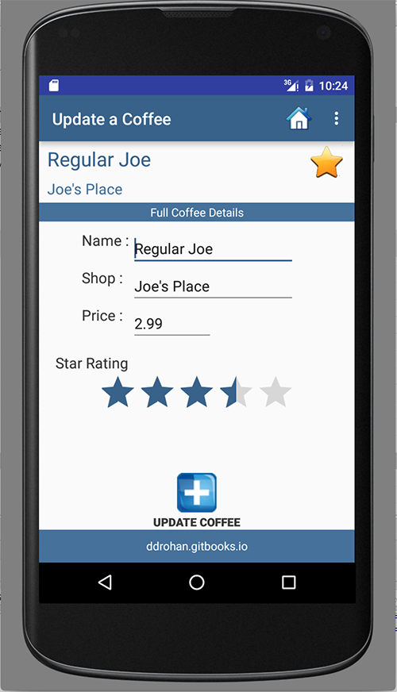
However, there's nothing to edit - so that's the next step - displaying the coffee data so we can change it (like above).
We can now launch the Edit Screen, but nothing gets displayed, so there's nothing to edit. What we need to do now is
'bind' the specific coffee data to the individual views/fields on the Edit Screen
if any changes are made, ensure these changes are reflected in the global coffeeList
First of all, open your edit.xml layout and familarise yourself with the 'names' or id's of all the relevant views you need to access (coffeeNameTextView is highlighted in the screenshot below).
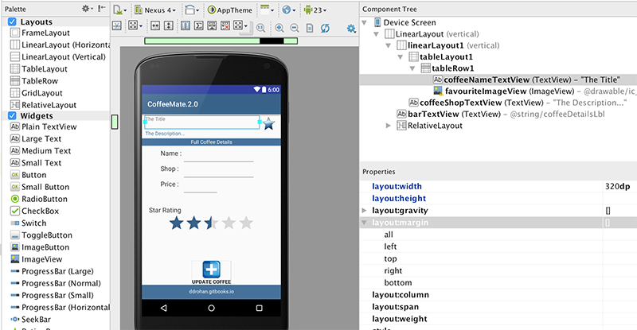
And here's how we set the title 'field' to the name of the coffee
((EditText)findViewById(R.id.nameEditText)).setText(aCoffee.name);Run the app again, and see what you get - now have a go at the rest of the coffee data yourself.
The completed section of missing code is as follows:
setContentView(R.layout.edit);
activityInfo = getIntent().getExtras();
aCoffee = getCoffeeObject(activityInfo.getInt("coffeeID"));
((TextView)findViewById(R.id.coffeeNameTextView)).setText(aCoffee.name);
((TextView)findViewById(R.id.coffeeShopTextView)).setText(aCoffee.shop);
((EditText)findViewById(R.id.nameEditText)).setText(aCoffee.name);
((EditText)findViewById(R.id.shopEditText)).setText(aCoffee.shop);
((EditText)findViewById(R.id.priceEditText)).setText(""+aCoffee.price);
((RatingBar) findViewById(R.id.coffeeRatingBar)).setRating((float)aCoffee.rating);
favouriteImage = (ImageView) findViewById(R.id.favouriteImageView);
if (aCoffee.favourite == true) {
favouriteImage.setImageResource(R.drawable.ic_favourite_on);
isFavourite = true;
} else {
favouriteImage.setImageResource(R.drawable.ic_favourite_off);
isFavourite = false;
}including attaching a listener to the 'Update' Button, via xml.
android:onClick="update"with our toggle() method looking something like this:
public void toggle(View arg0) {
if (isFavourite) {
aCoffee.favourite = false;
toastMessage("Removed From Favourites");
isFavourite = false;
favouriteImage.setImageResource(R.drawable.ic_favourite_off);
} else {
aCoffee.favourite = true;
toastMessage("Added to Favourites !!");
isFavourite = true;
favouriteImage.setImageResource(R.drawable.ic_favourite_on);
}
}It's still not finished however - there's a small but significant bug in loading up the correct coffee to update on the edit screen and the update() method is nearly complete, but there's a few lines of (very important) code still to be added, so run the app once more and try and identify what needs to be done to fully implement this Edit/Update feature.
You'll find the necessary code extracts in the the next step, but try and have a go before you proceed.
The first issue was, no matter which coffee we 'clicked' on we always got the first coffee to edit - this is because the coffee id never gets set, so you need to refactor the Coffee model and add an autoincrement number to act as a unique id. It's a bit crude but it'll do the job until we move on to more sophisticated approaches in later labs.
probably easiest to do something like this
public class Coffee implements Serializable
{
public static int autoid = 1;
public int coffeeId;
public String name;
public String shop;
public double rating;
public double price;
public boolean favourite;
public Coffee() {}
public Coffee(String name, String shop, double rating, double price, boolean fav)
{
this.coffeeId = autoid++;
this.name = name;
this.shop = shop;
this.rating = rating;
this.price = price;
this.favourite = fav;
}
@Override
public String toString() {
return "Coffee [name=" + name
+ ", shop =" + shop + ", rating=" + rating + ", price=" + price
+ ", fav =" + favourite + "]";
}
}And you probably worked out that the problem was, even if we changed the data, it was only updated in our list of coffees if we clicked the 'Update' Button, but nothing else happens - we'd need to hit the 'back' button to return to the previous screen.
It's worth noting that we never actually 'put it back' in the list after we updated it, but because our list is static, that's ok - any changes to a single coffee are updated in the global list. We might need to revisit this in later labs, but for now, it's all good.
In the update() method we need something like this
goToActivity(this,Home.class, activityInfo);so see if you can work out where this should be inserted.
You should run you app once more and fully test it for the features now implemented.
Currently, if we wanted to delete more than one coffee at a time we need to delete them individually, which does achieve what we want, but is not a great User Experience if there are dozens of coffees to remove.
This is where we can utilise a Context Menu and the ActionBar / Action Mode features available to us in Android.
This is what we want when the user 'Long Clicks' a row in our List.
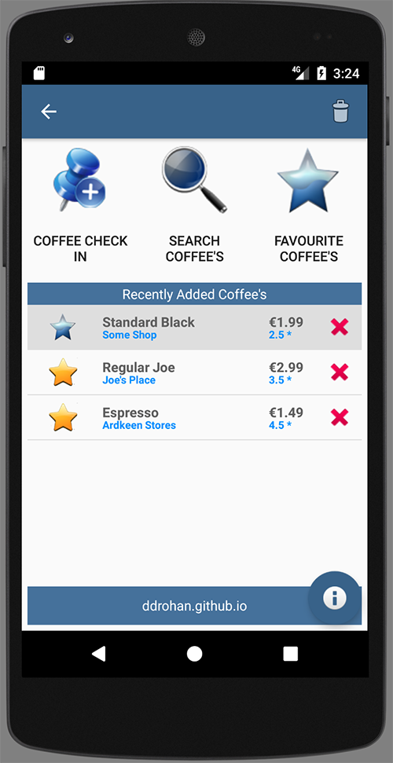
Note the different (Context) Menu for deleting.
And then subsequently
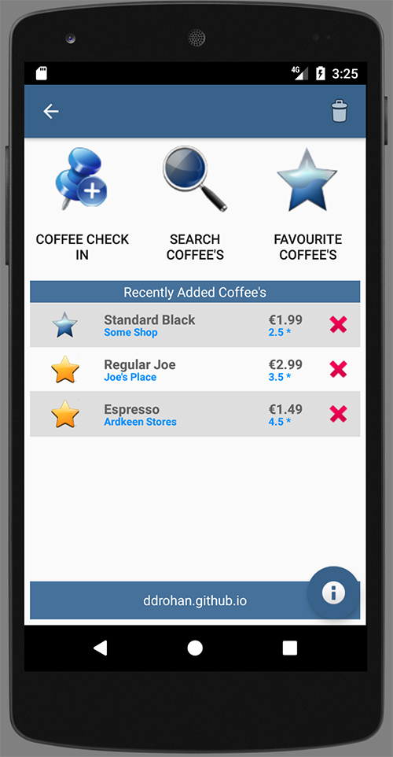
To achieve this we need to
design the Context Menu
update the coffeerow design (for when it's selected) and
update our application 'style' to reflect what and how our Context Menu overlays.
First, let's design the Menu to look something this:
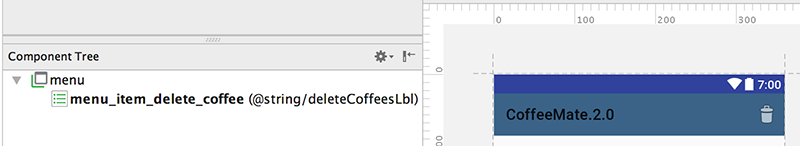
and
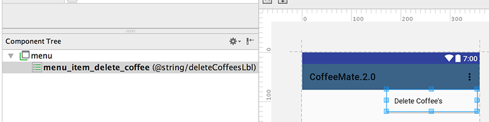
create a new menu resource in the 'menu' folder called 'delete_list_context.xml' and place the following code inside it - just make sure you have the proper string resource set up beforehand ('deleteCoffeesLbl')
<?xml version="1.0" encoding="utf-8"?>
<menu xmlns:app="http://schemas.android.com/apk/res-auto"
xmlns:android="http://schemas.android.com/apk/res/android">
<item
android:id="@+id/menu_item_delete_coffee"
android:icon="@android:drawable/ic_menu_delete"
android:title="@string/deleteCoffeesLbl" />
</menu>Next, create a new drawable selector resource xml file in the 'drawable' folder called 'background_activated.xml' and place the following inside
<?xml version="1.0" encoding="utf-8"?>
<selector xmlns:android="http://schemas.android.com/apk/res/android" >
<item
android:state_activated="true"
android:drawable="@color/appFooterBGColor"
/>
</selector>Now, edit your coffeerow.xml and add the resource you just created as the background color property for the whole layout (at the top), like so
android:background="@drawable/background_activated"Finally, edit your styles.xml and add the following to your 'AppTheme' style. If you like, you can experiment with you own colors?
<item name="windowActionModeOverlay">true</item>
<item name="actionModeBackground">@color/colorPrimary</item>The first thing to do is open up 'CoffeeFragment.java' and make sure this class implements the interface we need:
public class CoffeeFragment extends ListFragment implements OnClickListener,
AbsListView.MultiChoiceModeListener
{
. . .
}add the necessary imports and accept the defaults for all the callbacks, we'll implement what we need to next.
The MultiChoiceModeListener methods are :
/* ************ MultiChoiceModeListener methods (begin) *********** */
@Override
public boolean onCreateActionMode(ActionMode actionMode, Menu menu)
{ . . . }
@Override
public boolean onPrepareActionMode(ActionMode actionMode, Menu menu)
{ . . . }
@Override
public boolean onActionItemClicked(ActionMode actionMode, MenuItem menuItem)
{ . . . }
@Override
public void onDestroyActionMode(ActionMode actionMode)
{}
@Override
public void onItemCheckedStateChanged(ActionMode actionMode, int position, long id, boolean checked)
{}
/* ************ MultiChoiceModeListener methods (end) *********** */We only need to implement a few of them, and supply one other local method to actually carry out the deleting of multiple coffees, when selected.
Using the lecture material as reference, have a go at implementing the necessary methods to achieve the desired functionality. (The solution is on the next step anyway, but have a go first).
You've now, hopefully, implemented the necessary callbacks for handling the MultiChoiceMode, but there's one step needs to be carried - the ListView itself needs to be 'aware' that it's items can be selected individually AND as multiple items. This is achieved through setting some of the List properties as the 'View' is created.
To help you along, here's the method you need to add to 'CoffeeFragment', to achieve the desired results, but be sure what's going on here, before proceeding.
@Override
public View onCreateView(LayoutInflater inflater, ViewGroup parent, Bundle savedInstanceState) {
View v = super.onCreateView(inflater, parent, savedInstanceState);
listView = (ListView) v.findViewById(android.R.id.list);
listView.setChoiceMode(ListView.CHOICE_MODE_MULTIPLE_MODAL);
listView.setMultiChoiceModeListener(this);
return v;
}Run the app again and see if you can now delete multiple coffees through the use of a Context Menu and ActionMode/ActionBar.
Here's the full source code for the updated CoffeeFragment class, and the full solution can be found on the next, final step.
package ie.cm.fragments;
import ie.cm.R;
import ie.cm.activities.Base;
import ie.cm.activities.Edit;
import ie.cm.adapters.CoffeeListAdapter;
import ie.cm.models.Coffee;
import android.app.AlertDialog;
import android.app.ListFragment;
import android.content.Context;
import android.content.DialogInterface;
import android.content.Intent;
import android.os.Bundle;
import android.view.ActionMode;
import android.view.LayoutInflater;
import android.view.Menu;
import android.view.MenuInflater;
import android.view.MenuItem;
import android.view.View;
import android.view.View.OnClickListener;
import android.view.ViewGroup;
import android.widget.AbsListView;
import android.widget.ListView;
public class CoffeeFragment extends ListFragment implements OnClickListener,
AbsListView.MultiChoiceModeListener
{
protected Base activity;
protected static CoffeeListAdapter listAdapter;
protected ListView listView;
public CoffeeFragment() {
// Required empty public constructor
}
public static CoffeeFragment newInstance() {
CoffeeFragment fragment = new CoffeeFragment();
return fragment;
}
@Override
public void onAttach(Context context)
{
super.onAttach(context);
this.activity = (Base) context;
}
@Override
public void onCreate(Bundle savedInstanceState) {
super.onCreate(savedInstanceState);
listAdapter = new CoffeeListAdapter(activity, this, Base.coffeeList);
setListAdapter (listAdapter);
}
@Override
public View onCreateView(LayoutInflater inflater, ViewGroup parent, Bundle savedInstanceState) {
View v = super.onCreateView(inflater, parent, savedInstanceState);
listView = (ListView) v.findViewById(android.R.id.list);
listView.setChoiceMode(ListView.CHOICE_MODE_MULTIPLE_MODAL);
listView.setMultiChoiceModeListener(this);
return v;
}
@Override
public void onStart()
{
super.onStart();
}
@Override
public void onClick(View view)
{
if (view.getTag() instanceof Coffee)
{
onCoffeeDelete ((Coffee) view.getTag());
}
}
@Override
public void onResume() {
super.onResume();
((CoffeeListAdapter) getListAdapter()).notifyDataSetChanged();
}
@Override
public void onListItemClick(ListView l, View v, int position, long id)
{
Bundle activityInfo = new Bundle();
activityInfo.putInt("coffeeID", v.getId());
Intent goEdit = new Intent(getActivity(), Edit.class);
goEdit.putExtras(activityInfo);
getActivity().startActivity(goEdit);
}
public void onCoffeeDelete(final Coffee coffee)
{
String stringName = coffee.name;
AlertDialog.Builder builder = new AlertDialog.Builder(activity);
builder.setMessage("Are you sure you want to Delete the \'Coffee\' " + stringName + "?");
builder.setCancelable(false);
builder.setPositiveButton("Yes", new DialogInterface.OnClickListener()
{
public void onClick(DialogInterface dialog, int id)
{
Base.coffeeList.remove(coffee); // remove from our list
listAdapter.coffeeList.remove(coffee); // update adapters data
listAdapter.notifyDataSetChanged(); // refresh adapter
}
}).setNegativeButton("No", new DialogInterface.OnClickListener()
{
public void onClick(DialogInterface dialog, int id)
{
dialog.cancel();
}
});
AlertDialog alert = builder.create();
alert.show();
}
/* ************ MultiChoiceModeListener methods (begin) *********** */
@Override
public boolean onCreateActionMode(ActionMode actionMode, Menu menu)
{
MenuInflater inflater = actionMode.getMenuInflater();
inflater.inflate(R.menu.delete_list_context, menu);
return true;
}
@Override
public boolean onPrepareActionMode(ActionMode actionMode, Menu menu)
{
return false;
}
@Override
public boolean onActionItemClicked(ActionMode actionMode, MenuItem menuItem)
{
switch (menuItem.getItemId())
{
case R.id.menu_item_delete_coffee:
deleteCoffees(actionMode);
return true;
default:
return false;
}
}
private void deleteCoffees(ActionMode actionMode)
{
for (int i = listAdapter.getCount() - 1; i >= 0; i--)
{
if (listView.isItemChecked(i))
{
Base.coffeeList.remove(listAdapter.getItem(i));
}
}
actionMode.finish();
listAdapter.notifyDataSetChanged();
}
@Override
public void onDestroyActionMode(ActionMode actionMode)
{}
@Override
public void onItemCheckedStateChanged(ActionMode actionMode, int position, long id, boolean checked)
{}
/* ************ MultiChoiceModeListener methods (end) *********** */
}This is a solution to the lab:
In this lab you have experimented with Custom Adapters & Fragments: